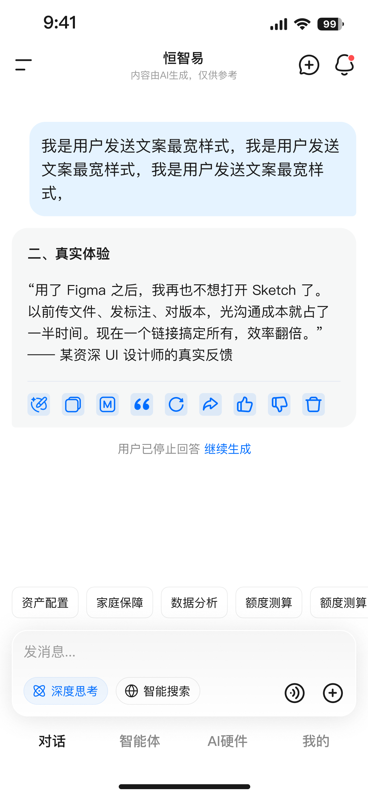
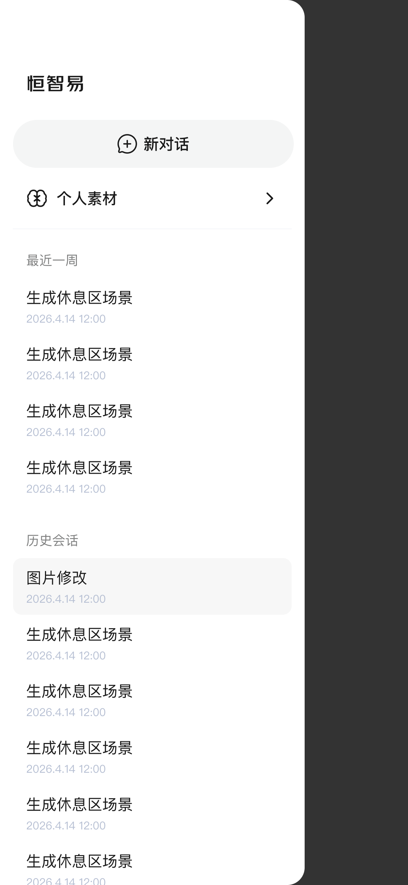
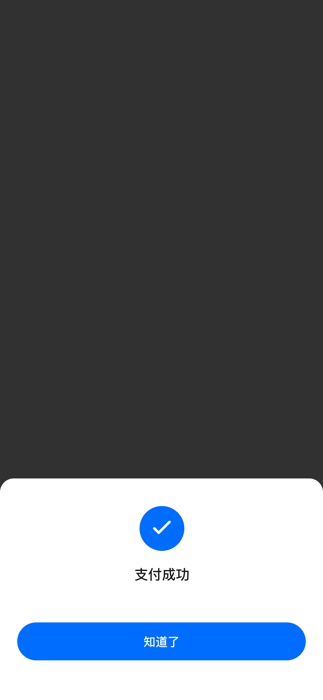
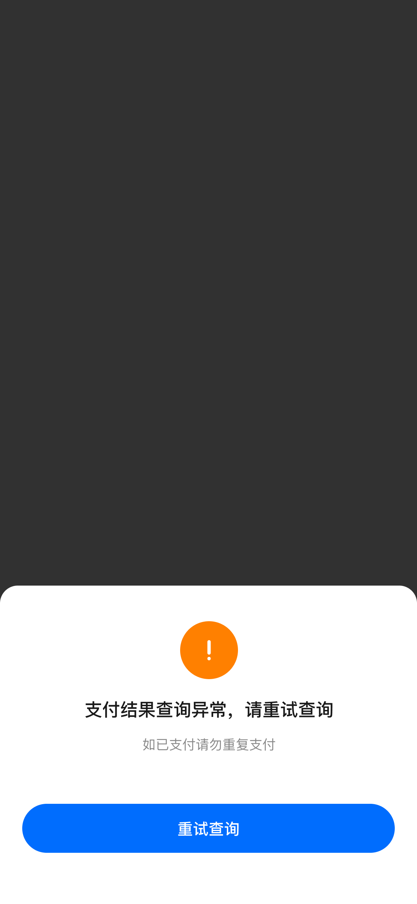

让任务有明确起点
用推荐问题呈现场景，将输入区与快捷能力分层，让丰富能力有清楚的入口。
首页场景提示 / 统一输入区视觉体系升级与核心体验设计
让复杂能力，成为清晰体验。
PROJECT OVERVIEW / 项目概述
恒智易 AI 将智能对话、内容创作与会员服务整合在同一移动端产品中。随着能力不断丰富，设计需要让用户看懂入口、识别过程，并顺畅地使用结果。
我负责界面设计、视觉迭代与相关规范整理。本案例聚焦 3.0 设计稿与配套规范，呈现我在视觉一致性、状态表达和页面复用中的设计判断。
用推荐问题呈现场景，将输入区与快捷能力分层，让丰富能力有清楚的入口。
首页场景提示 / 统一输入区操作随生成状态变化；停止后保留内容与继续入口，让每一步都有清楚反馈。
生成中 / 已停止 / 继续生成统一导航、输入样式与基础组件，同时为不同智能体保留业务内容的表达空间。
固定框架 / 按需配置ONE PRODUCT, MANY POSSIBILITIES
让不同能力拥有共同的视觉语言，
也保留各自的使用方式。
点击界面，可查看原始设计细节。
START A CONVERSATION / 对话入口
面对多种 AI 能力，首页先回答“可以帮我做什么”。推荐问题让场景变得具体，输入与快捷能力保持明确分工，让浏览自然连接到任务表达。
可直接尝试的问题，降低开始表达的门槛。
输入框承接主任务，能力入口与导航各司其职。
把注意力留给当下的提问与输入。
MULTIMODAL INPUT / 多种表达
围绕文字、语音、图片与文件，
用连续的状态反馈，说明正在发生什么。
录音状态与取消状态使用不同反馈，让手指的动作有对应的视觉结果。
在统一输入区展开补充能力，保持入口稳定，让不同类型的资料自然加入对话。
GENERATION STATES / 生成反馈
回答中的反馈、停止后的提示与继续生成入口，共同组成连续的状态表达。每一次等待与操作，都对应清楚的下一步。
点击切换，查看原稿中的交互细节。
停止入口位于输入区域，与当前操作保持关联。

明确标记回答已停止，保留已有内容与继续生成入口。
结果操作紧随内容，便于继续整理、复用与反馈。
CREATE WITH AI / 创作能力
生图、视频与不同智能体拥有各自的内容。
统一导航和基础操作，让能力变化，体验依然连贯。
FLEXIBLE BY DESIGN / 智能体框架
业务能力增加时，界面需要有稳定的复用基础。将导航、对话样式与输入基础统一，再让业务内容与输入能力按场景配置。
导航、对话和输入样式
保持共同规则。
根据任务组织信息，
形成场景差异。
组件复用与业务定制
各有对应区域。
依据智能体规范整理的结构示意
BEYOND A CONVERSATION / 内容复用
从找回历史对话，到选择与分享内容，
让一次回答连接到之后的使用。

历史记录与个人素材提供持续使用的入口。
MEMBERSHIP & PAYMENT / 会员体验
会员页面按套餐、积分与权益组织信息；支付之后，让不同结果对应明确的下一步，保持整个流程的连续性。
套餐选择 · 积分信息 · 权益比较
明确反馈支付成功，并以确认操作收束当前流程。

保留重试查询入口，并提示已支付用户避免重复支付。

VISUAL LANGUAGE / 设计体系
以黑白灰承载内容，以品牌蓝突出关键操作。
将颜色、层级与状态整理为可复用的设计规则。
中性色组织内容，蓝色承接关键行为；同时为反馈与状态保留明确差异。
将规则与实际场景对应，为后续扩展、设计沟通和还原检查提供参照。
DESIGN REFLECTION / 项目沉淀
这个项目让我持续关注视觉表达、状态衔接与规范复用之间的关系。既打磨用户能够看见的细节，也整理支持后续扩展的规则，让设计在真实流程中保持一致。
让布局、色彩与信息层级共同服务于内容。
把等待、停止与异常视为体验的一部分。
在保持一致的同时，容纳业务与场景的变化。
后续可结合真实使用反馈，验证任务入口、生成中断与支付异常场景中的理解成本，并继续完善对应状态。
DESIGN SCREENS